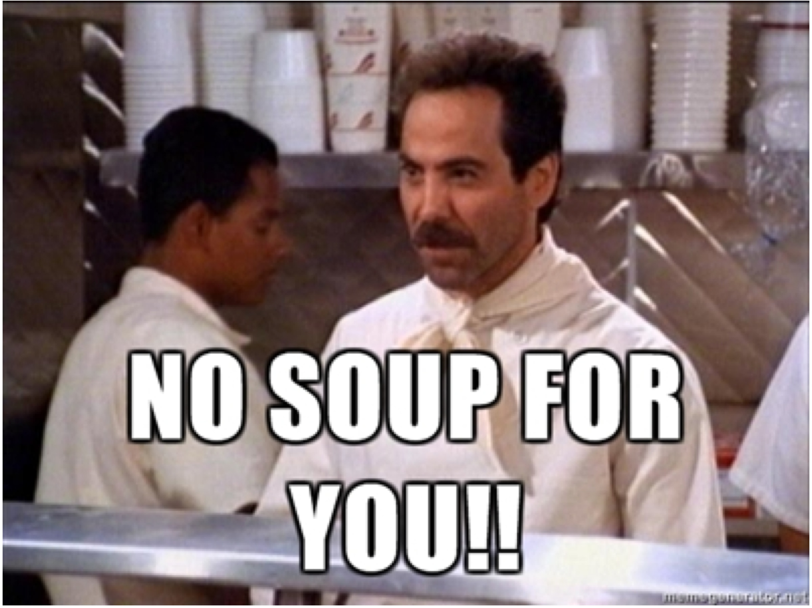

The Soup

Description
There’s a new soup place in town and, rumor has it, it’s the best in the city. The gang frequents the stand for its fantastic crab bisque and turkey chili, only for the owner (“The Soup Nazi”) to ban them—one after another—for violating his strict ordering protocol. George asks for bread, Jerry’s girlfriend shows too much PDA, and Elaine bangs on the counter. Eventually, Elaine drives The Soup Nazi out of the city when she finds his secret recipes in an armoire he gave to Kramer.
Ingredients
- olive oil
- 2 tablespoons tomato paste
- 1 medium to large onion, chopped
- 5 garlic cloves, minced
- 1/2 red bell pepper, chopped
- 1 teaspoon chili powder
- 1/2 teaspoon hot paprika
- 1/2 teaspoon dried coriander
- 1/4 teaspoon oregano
- 1 dash cinnamon
- 1 pound ground turkey breast
- 1 cup dark beer, such as Leffe Brown
- 1 28-ounce can diced tomatoes
- 1 15 1/2-ounce can kidney beans, drained
- 1/2 teaspoon hot sauce or chile paste
- salt and pepper
- sour cream, chopped chives, cilantro, and/or shredded cheese, for topping
Steps
- Heat a bit of olive oil in a large pot over medium heat. Add the tomato paste, onion, garlic, and red pepper. Cook, stirring occasionally, until softened. Add the chili powder, hot paprika, coriander, oregano, and cinnamon; stir and allow to cook until aromatic, 1 minute.
- Add the ground turkey and cook, breaking it up with a spoon, until lightly browned. Pour in the beer and allow to cook down slightly.
- Add the tomatoes, beans, and hot sauce or chili paste.
- Allow the chili to simmer, uncovered, until thickened, about 40 minutes. Season with salt and pepper to taste. Top with sour cream, chopped chives, cilantro, and/or shredded cheese.
No soup for you!